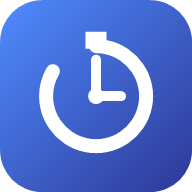

Wybierz miesiąc i kliknij ✏️ przy dniu, żeby poprawić godziny albo go usunąć.
Zalogowano jako —
Usunięcie konta kasuje bezpowrotnie Twoje konto i WSZYSTKIE Twoje dane.
Ustaw, kiedy i jak często jeździsz do Polski — na tej podstawie policzymy Twój status i kolejne zjazdy.
Usuwa WSZYSTKIE zapisane godziny pracy z bazy. Tej operacji nie da się cofnąć.
Jeśli "Do" jest wcześniej niż "Od" (np. 20:00 → 6:00), system założy, że zmiana kończy się następnego dnia. Przerwa jest odejmowana od czasu brutto — wynikiem jest czas netto.
Ustawi te same godziny "od–do" dla każdego dnia w zakresie. Nadpisze istniejące wpisy dla tych dni.
Stuknij dzień początkowy, potem dzień końcowy — oba w tym samym kalendarzu.
Oznaczy każdy dzień w zakresie jako dzień wolny (0h) z notatką "Urlop". Nadpisze istniejące wpisy w tym zakresie.
Ustawi wybrany dzień (czwartek) na 6 godzin pracy bez przerwy i oznaczy kolejny dzień (piątek) jako dzień wolny. Nadpisze istniejące wpisy dla obu dni.
Kalendarz Pracy to prywatny tracker godzin pracy — logujesz przepracowane godziny, a aplikacja sama liczy netto, godziny nocne/niedzielne, urlop i status Polska/Niemcy. Każde konto widzi tylko swoje dane.